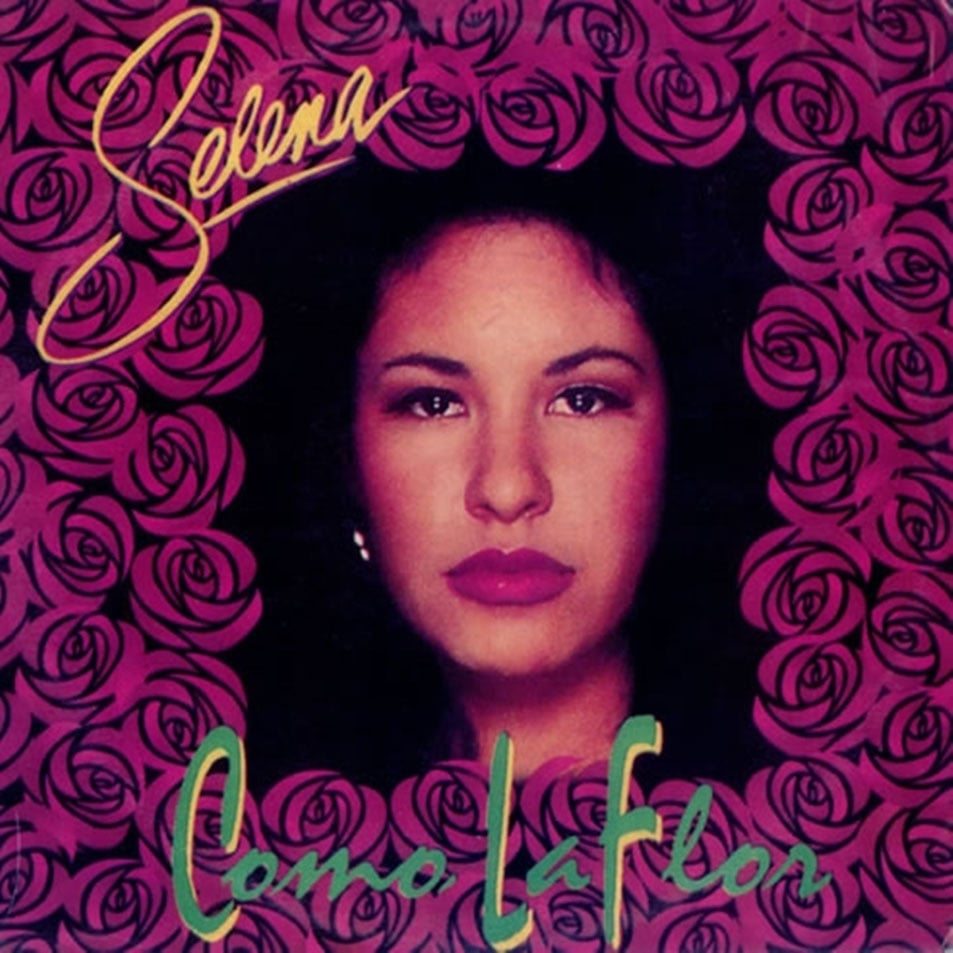
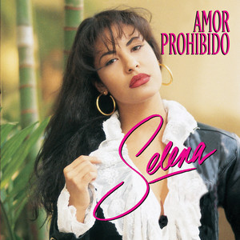

Selena Quintanilla Pérez, conocida simplemente como Selena, nació el 16 de abril de 1971 en Lake Jackson, Texas, Estados Unidos. Fue una cantante, compositora, actriz, modelo y diseñadora de moda mexicano-estadounidense, conocida como la "Reina del Tex-Mex".
Desde muy joven, Selena mostró un talento innato para la música. A los nueve años, comenzó a cantar en la banda de su padre, Los Dinos. Con el tiempo, Selena se convirtió en la vocalista principal del grupo, que luego pasó a llamarse Selena y Los Dinos.
En 1987, Selena lanzó su primer álbum de estudio, titulado "Selena". Desde entonces, grabó varios álbumes exitosos, consolidando su carrera en la música tejana y tex-mex. Su álbum "Amor Prohibido" (1994) se convirtió en uno de los álbumes latinos más vendidos de todos los tiempos.
Trágicamente, el 31 de marzo de 1995, Selena fue asesinada a la edad de 23 años por Yolanda Saldívar, la presidenta de su club de fans y administradora de sus boutiques. Su muerte conmocionó a sus fanáticos en todo el mundo y tuvo un impacto duradero en la comunidad latina y en la industria de la música.
Las mejores canciones de Selena
"Bidi Bidi Bom Bom" - Esta canción es una de las más reconocidas de Selena, con su ritmo pegajoso y letras alegres. Es un clásico instantáneo que sigue siendo popular hasta el día de hoy.

"Como La Flor".-fue lanzada en 1992 como parte del álbum "Entre a Mi Mundo", el tercer álbum de estudio de Selena y Los Dinos. La canción se convirtió rápidamente en uno de los mayores éxitos de Selena y contribuyó significativamente a su ascenso a la fama.
habla sobre el dolor de un amor perdido. La flor se utiliza como metáfora para describir cómo el amor floreció y luego se marchitó, dejando solo tristeza y dolor. La canción es una balada emotiva que resonó con muchos oyentes debido a su tema universal sobre el desamor.
combina elementos de cumbia y tejano, dos géneros que eran distintivos en la música de Selena. La canción presenta un ritmo contagioso y pegajoso, complementado por la poderosa voz de Selena y su estilo único de interpretación.

"Amor Prohibido".-Es una de las canciones más emblemáticas de Selena Quintanilla. Fue lanzada en 1994 como el sencillo principal de su álbum homónimo, que se convirtió en uno de los álbumes latinos más vendidos de todos los tiempos. Aquí tienes más información sobre esta icónica canción:
habla sobre un amor que es considerado prohibido por razones sociales o culturales. La canción cuenta la historia de dos amantes que enfrentan obstáculos debido a la oposición de sus familias o la sociedad. A pesar de los desafíos, los protagonistas luchan por su amor, desafiando las normas establecidas.
es una mezcla de cumbia y tejano, dos géneros musicales muy populares en la música de Selena. La canción presenta un ritmo bailable y pegajoso, combinado con la potente voz de Selena y su estilo distintivo.
La canción fue un gran éxito tanto comercial como crítico. Alcanzó el número uno en las listas de Billboard Hot Latin Songs y se mantuvo en esa posición durante nueve semanas consecutivas. Además, "Amor Prohibido" recibió elogios por su composición y producción, así como por la interpretación vocal de Selena.
 "Dreaming of You".-fue lanzada en 1995 como parte del álbum póstumo del mismo nombre, "Dreaming of You". Este álbum fue lanzado después del trágico asesinato de Selena en marzo de 1995 y se convirtió en un tributo a su talento y legado.
"Dreaming of You".-fue lanzada en 1995 como parte del álbum póstumo del mismo nombre, "Dreaming of You". Este álbum fue lanzado después del trágico asesinato de Selena en marzo de 1995 y se convirtió en un tributo a su talento y legado.
habla sobre extrañar a alguien y soñar con estar juntos nuevamente. Es una canción de amor con una mezcla de melancolía y esperanza, lo que la convierte en una balada poderosa y emotiva.
es una balada pop con influencias de la música latina. Presenta una melodía suave y emotiva, con la voz característica de Selena destacando sobre los arreglos musicales.
es una balada pop con influencias de la música latina. Presenta una melodía suave y emotiva, con la voz característica de Selena destacando sobre los arreglos musicales.
Logros de selena
 Éxito en las listas de éxitos: Selena logró múltiples éxitos en las listas de éxitos, incluyendo varios sencillos número uno en la lista Billboard Hot Latin Songs. Canciones como "Amor Prohibido", "Bidi Bidi Bom Bom" y "No Me Queda Más" fueron enormemente populares en su tiempo y siguen siendo consideradas clásicos de la música latina.
Éxito en las listas de éxitos: Selena logró múltiples éxitos en las listas de éxitos, incluyendo varios sencillos número uno en la lista Billboard Hot Latin Songs. Canciones como "Amor Prohibido", "Bidi Bidi Bom Bom" y "No Me Queda Más" fueron enormemente populares en su tiempo y siguen siendo consideradas clásicos de la música latina.
Premios y reconocimientos: A lo largo de su carrera, Selena recibió numerosos premios y reconocimientos, incluyendo premios Grammy, premios Billboard, premios Lo Nuestro y premios Tejano Music. Su impacto en la música latina fue ampliamente reconocido, y su legado continúa siendo honrado incluso después de su muerte.
Ventas de álbumes: Selena fue una de las artistas latinas más exitosas en términos de ventas de álbumes. Su álbum "Amor Prohibido" se convirtió en uno de los álbumes latinos más vendidos de todos los tiempos, y su disco póstumo "Dreaming of You" debutó en el número uno en el Billboard 200, convirtiéndola en la primera artista latina en lograr ese hito.
Legado cultural: Selena dejó un legado duradero en la música latina y en la cultura pop en general. Su estilo único y su carisma la convirtieron en un ícono para muchas personas, especialmente para la comunidad latina. Su impacto en la moda, la música y la cultura popular sigue siendo evidente hasta el día de hoy.
Película biográfica: En 1997, se estrenó la película biográfica "Selena", protagonizada por Jennifer Lopez en el papel principal. La película ayudó a llevar la historia y el legado de Selena a una audiencia más amplia y contribuyó a mantener viva su memoria.
Programacion 400 - Bachillerato Militarizado Reynosa
Conoce nuestras redes, El Bachillerato Militarizado, Honra a las mujeres que cambiaron su historia.